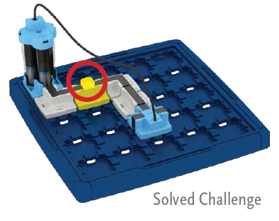

Do It! Circuit Maze: Explore Circuits with Decimals and Fractions
 The Challenge
The Challenge
Your challenge is to build circuits that light up colored beacons. You will choose challenge cards that tell you which colored beacons to light and which pieces (game tokens) to use. See how many challenges you can solve! Before you get started, you will write decimals as fractions to explore voltages.
Project Steps
-
Explore Power Sources
-
Circuit Challenge
Explore Power Sources
Before starting, let’s look at the power source you will be using when completing the challenges. The Circuit Maze uses three AAA batteries for its power source, for a total of 1.5 volts used to power the game. You can write this as a mixed number by rewriting 0.5 as the fraction . When looking at place value, the first digit to the right of the decimal point represents tenths; therefore, to write it as a fraction you can write the given digit over a denominator of 10 to represent 5 tenths:
The same rule applies for decimals that are written out to the hundredths place. For example, the voltage needed for a laptop is 19.75 volts. To write as a decimal, look to the digits to the right of the decimal point.
The digit right after the decimal point is in the tenths place, so you can write ‘7’ over a denominator of 10 to represent 7 tenths:.
The last digit is in the hundredths place, so you can write ‘5’ over a denominator of 100 to represent 5 hundredths: .
19.75 as a fraction is equal to 19 + + .
To add or subtract fractions, common denominators are needed. The common denominator here is 10. To write an equivalent fraction for that has a denominator of 100, both the numerator and the denominator need to be multiplied by 100.
You can now add all three values:
The chart below shows the various voltages of a number of small electronics that you might have. Use what you’ve learned about rewriting decimals as fractions to complete the Circuit Maze Voltage Chart.
|
Electronic |
Voltage (Decimal) |
Expanded Form Written with Fractions |
Voltage (Fraction) |
|
Circuit Maze |
1.5 |
||
|
Laptop |
19.75 |
||
|
Smartphone |
3.5 |
||
|
iPad charger |
5.12 |
||
|
Small Radio |
1.2 |
||
|
TV Remote Controller |
3.25 |
Circuit Challenge
Solve as many challenge cards as you can. Then, choose two or three challenge cards that you think were particularly hard to solve. Explain how the circuits work.
Take pictures of your circuits, even if your solutions did not work. Once you solve the challenge or review the solution, you can explain what you tried to do originally, and how you changed your circuit to make it work.
Here are some questions you can answer about your circuit:
- How did you make sure to light all the beacons that were supposed to be lit?
- How did you make specific beacons stay off (if that is what they were supposed to do)?
- If you used a switch, how did it affect your circuit?